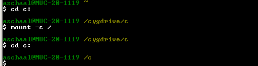
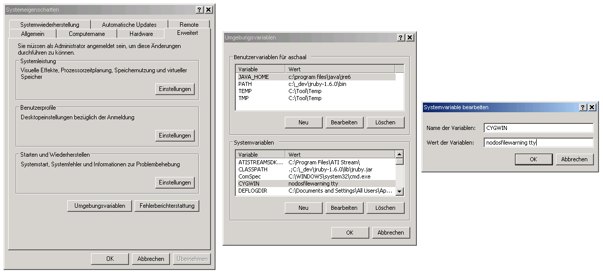

How to use bake in Cygwin
Why using Cygwin on Windows instead of the built-in command shell? There is one major reason: Cygwin supports colored output via ansi escape sequences.
Note, that these steps differ depending on the Cygwin version, installed packages and configuration.
Get rid of the cygdrive prefix

As you see, "c:" is now "/c" and not "/cygdrive/c" anymore.
In newer Cygwin versions, this is not permanent. To make it permanent, add the following line to /etc/fstab (can be found in your Cygwin installation directory):
none / cygdrive binary,posix=0,user 0 0
Get rid of the Cygwin ruby

Easiest way is to rename the Cygwin ruby, which makes the original ruby visible. This is only necessary if you have ruby installed in our Cygwin environment.
Add tty to CYGWIN option

"tty" must be added to the CYGWIN system variable.
Start the build
Use the parameter "-a black" or "-a white" depending on the background color of your shell.
Depending on your Cygwin installation, you have to call "bake.bat" instead of "bake". To avoid this, create an alias, e.g:
alias bake=/c/Programme/_dev/Ruby192/bin/bake.bat